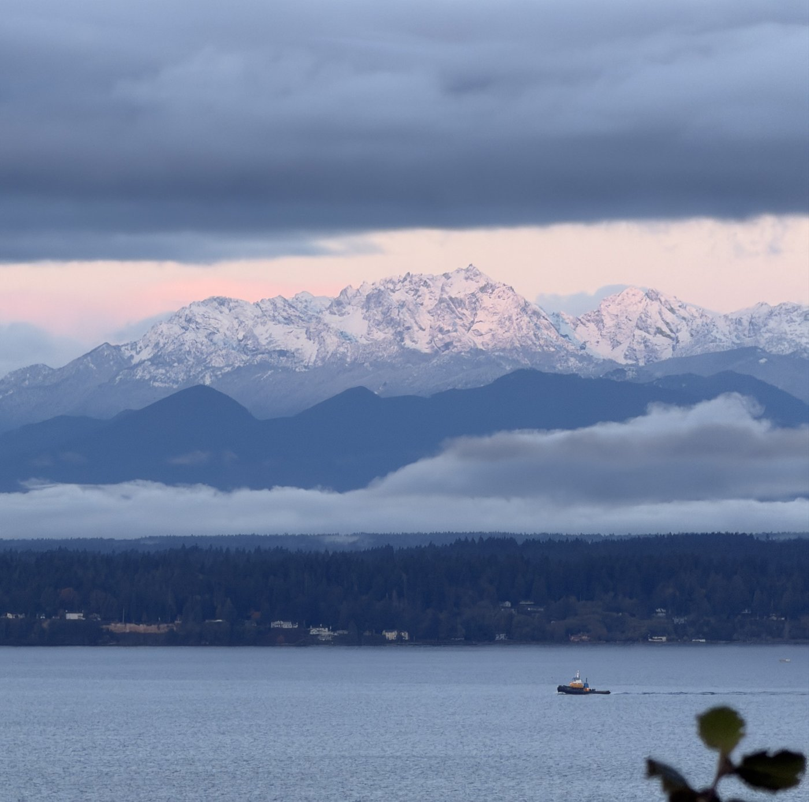

<section>
    <div class="highlight-box">
        <h3>See you on November 5 ❄️</h3>
        <p>
            The first weekend forecast of the season will be posted this coming
            <strong>Thursday, November 5</strong>. Forecasts will then continue every Thursday through the winter.
        </p>
        <figure style="max-width:700px; margin:1rem auto; text-align:center;">
            
            <figcaption><em>Olympic Mountains, October 28, 2026</em></figcaption>
        </figure>
    </div>
</section>
